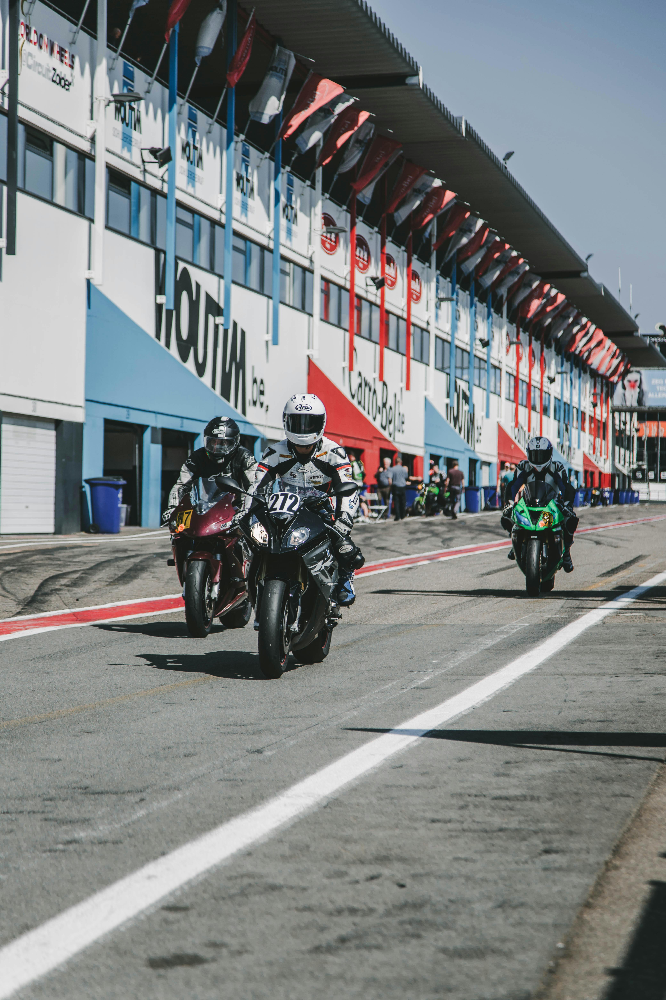

Información sobre nuestras motos:
Somos una fábrica de motos innovadora que nace con una idea clara: crear motocicletas que combinen potencia, diseño futurista y respeto por el medio ambiente. Disfruto pasar tiempo con mi familia y amigos y trabajar por mis metas futuras.- Java Script
- Python
- Bucles
- Listas
- Condicionales